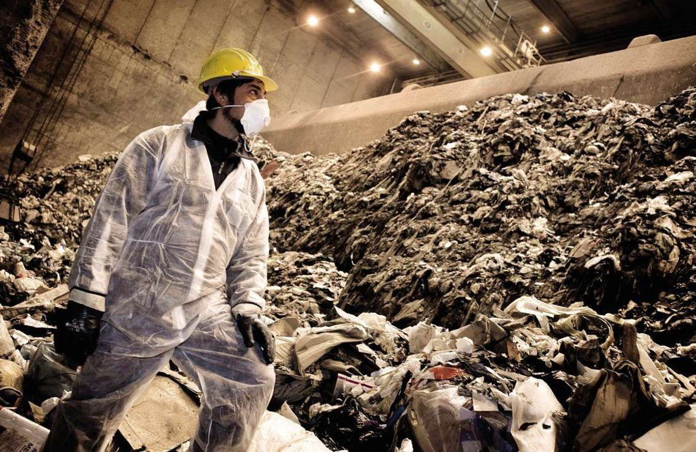

Il existe à ce jour aucune étude concluante sur l’évaluation des dangers qui pourraient être directement reliés aux nanotechnologies. L’état d’avancement des nanosciences et des nanotechnologies ne permet pas encore de connaître et de bien évaluer ces risques. La tendance est de minimiser ces risques, en rapport à la vaste étendue des applications possibles et envisagées. Il n’en demeure pas moins que ce problème est de plus en plus soulevé dans la communauté scientifique.
En juin 2003, le gouvernement anglais a donné à la Royal Society et à la Royal Academy of Engineering le mandat de mener une étude indépendante sur la question de savoir si les nanotechnologies soulèvent ou sont susceptibles de soulever des problèmes d’éthique, de santé, de sécurité et de société qui ne sont pas soumis à une réglementation déjà existante.
- Risques liés aux nanomatériaux
- Environnement
- Entreposage
- Risques pour la santé
.
Comme cela a été expliqué dans les sections précédentes, les nanomatériaux vont remplacer ceux qu’ont utilise actuellement à cause de leurs propriétés mécaniques améliorées. Par exemple, dans le domaine de l’automobile, le fait d’avoir recours à des matériaux faits de composites polymériques pourrait se traduire par une utilisation accrue de pièces structurelles en plastique qu’on assemblerait pour former des parties importantes du véhicule. Ceci réduit donc le poids de la carrosserie par exemple, donc la consommation d’énergie, donc la pollution qui en résulte. Par contre, il faut soulever aussi le point que le recyclage des polymères est plus ardu que celui du métal qu’on est en train de remplacer. Il faudra alors se doter de nouvelles méthodes de recyclage de ces nouveaux nanomatériaux avant de les lancer sur le marché.

Toujours en raison de l’augmentation de la surface des particules qui entraîne une plus grande réactivité, l’entreposage des nanoparticules exige des soins particuliers. Elles peuvent comme on l’a vu précédemment s’oxyder facilement. De plus, elles cherchent souvent à s’agglomérer entre elles. Il faut donc les entreposer soit dans un gaz inerte, soit en les enrobant d’une couche protectrice constituée de polymères ou de sels. Si l’on choisit des sels, il faudra en plus les enlever avant l’utilisation des particules. Par ailleurs, la taille des nanoparticules peut varier en cours de production, parfois de plusieurs nanomètres, de sorte qu’il faudra procéder à des transformations supplémentaires pour obtenir des nanoparticules de taille similaire. Leur production demeure alors encore complexe et souvent coûteuse.
Concernant les nanotechnologies et plus particulièrement les nanoparticules, les risques pour la santé seraient donc importants, quelle que soit la voie de pénétration : voies respiratoire, cutanée, digestive ou par inhalation, les particules ultra-fines pourraient se retrouver directement au contact du cerveau, par cette dernière voie.
Ainsi, soit directement, soit par nano-diffusion, les nanoparticules se retrouveraient au plus profond des organes (alvéoles pulmonaires) et pourraient migrer vers d'autres sites notamment ceux particulièrement irrigués (foie, cœur, rate). Il convient ainsi de travailler dans deux directions : la prévention et les études épidémiologiques. Les personnes manipulant ou en contact avec des nanoparticules doivent être protégées et médicalement suivies afin d'éviter un scénario « type amiante ».

En effet à travers Reach (Registration, Evaluation, Autorisation of CHemical legislation), l'Union européenne se dote d'un outil imposant aux industriels la déclaration et l'étude des risques toxiques de 30.000 substances chimiques répertoriées (produites, utilisées ou importées en Union européenne) d'ici à 2018. Après cette première phase, les 70.000 produits répertoriés restant, ainsi que les nouveaux, devraient faire l'objet d'une procédure similaire.
Pour mettre en œuvre cette loi, les industriels devront mener des prospectives toxicologiques sur des substances chimiques échappant jusqu'à maintenant à toute investigation (ne comprenant pas directement les produits pharmaceutiques ni naturels) ainsi que les substances chimiques nouvellement développées, dans lesquelles se retrouveront les substances issues des nanosciences. De plus, ils devront orienter la recherche vers la création de nouvelles substances remplaçant d'anciennes, avérées toxiques ou véritablement nouvelles et surtout non toxiques : le travail pour les spécialistes de toxicité et notamment d'hyper-toxicité des nanocomposés ne devrait pas manquer dans les décennies à venir.